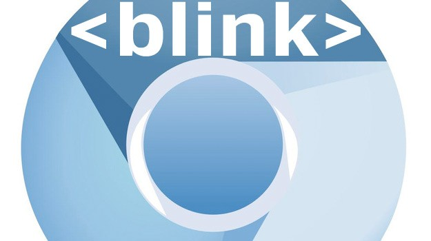

Браузерный движок (англ. layout engine) - представляет собой программу, преобразующую содержимое веб-страниц (файлы HTML, XML, цифровые изображения и т. д.) и информацию о форматировании (в форматах CSS, XSL и т. д.) в интерактивное изображение форматированного содержимого на экране.

Рисунок 1 - WebKit

Рисунок 2 - Blink

Рисунок 3 - Gecko
Рисунок 4 - Trident